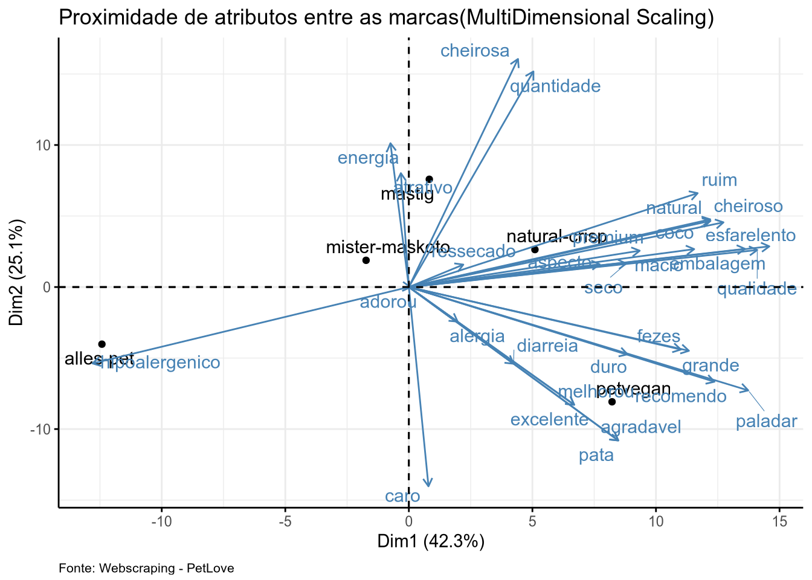
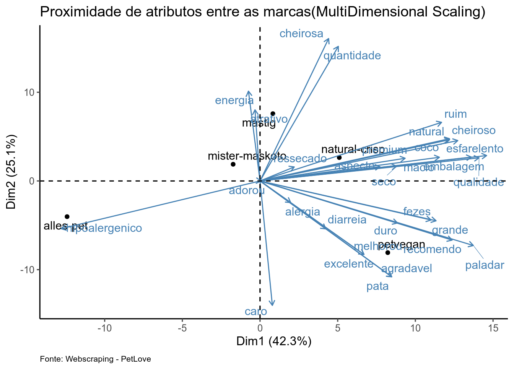

setwd("/home/antonio/Insper/Marketing Analytics/Trabalho-Final-Marketing")
library(reticulate)
use_virtualenv("./.venv", required = TRUE)Trabalho Final Marketing - Antonio Paneguini, Pedro Miné, Victor Tokunaga
Introdução
Neste relatório, nos dedicamos a criar uma analise de percepção de marcas de Petiscos de Cachorro para podermos entender quais são os termos mais importantes e frequentes tidos pelos clientes quando eles consideram comprar um biscoito em um mercado pet cada vez mais inserido nas dinamicas familiares modernas, onde o cuidado do animal de estimação se torna prioridade alta por partes dos tutores. O relatório sera feito baseado em uma pesquisa previamente realizada pela empresa Petí, vendedora de petiscos saudáveis para animais de estimação.
Contextualização
A empresa Petí, atuante no mercado de Pet Treats, estava interessada em analises de percepção de seus proprios produtos e o posicionamento de si mesma no mercado. Para poder dimensionalizar sua situação, foi primeiro necessario fazer uma analise dos concorrentes para se inserir eles no mercado e ter uma ideia de seu posicionamento em relação a eles.
Como a Petí não dispões de uma volumetria alta de dados sobre a percepção dos clientes sobre si, foi dado preferencia a tentar se projetar perto de empresas que usam produtos e linguagens semelhantes. Apos algumas analises de clusterização preliminares (pode ser lida no arquivo Analise_Predição_Petisco_Bifinho.html incluso, mas nao sera o foco do trabalho), foi apresentado para os socios uma lista de empresas que foram identificadas como potenciais concorrentes. Em uma votação cega, os sócios deveriam votar em quem eles achassem que era um potencial concorrente direto, dando uma pontuação binaria de 1 ou 0. Ao final da votação, o score total de cada marca foi somado com um maximo de tres:
- Risco Alto (3 pontos)
- Risco Médio (2 pontos)
- Risco Baixo (1 ponto)
- Risco Nulo (0 pontos, ninguem votou nessa marca)
Base de Dados
A base foi extraida por meio de Web Scraping do site de e-commerce da empresa PetLove realizado por bots usando a biblioteca Selenium do Python. Uma versão do script utilizado esta disponivel em: {colocar o link do github aqui}
Metodologia de WebScraping
import pandas as pd
import glob
import os
import re
from pathlib import Path
import matplotlib.pyplot as plt
import seaborn as sns
import numpy as np
from wordcloud import WordCloud, STOPWORDS
import altair as alt
import numpy as np
from sklearn.preprocessing import LabelEncoder
from sklearn.preprocessing import OneHotEncoder
from sklearn.preprocessing import StandardScaler
from sklearn.model_selection import train_test_split
from sklearn.feature_extraction.text import TfidfVectorizer
from sklearn.cluster import KMeans
import nltk
nltk.download('stopwords') Truefrom sklearn.decomposition import PCA
from nltk.corpus import stopwords
from sklearn.tree import DecisionTreeClassifier, plot_tree # Import Decision Tree Classifier
from sklearn.model_selection import train_test_split # Import train_test_split function
from sklearn import metrics
from scipy.sparse import hstack
from sklearn.metrics import classification_report, accuracy_score
from sklearn.preprocessing import label_binarize
from sklearn.metrics import roc_curve, auc
from sklearn.multiclass import OneVsRestClassifier
from sklearn.model_selection import train_test_split
from sklearn.tree import DecisionTreeClassifier
import matplotlib.pyplot as plt
from sklearn.metrics import RocCurveDisplay
from sklearn.metrics import ConfusionMatrixDisplay, confusion_matrix
from sklearn.ensemble import RandomForestClassifier
from sklearn.multiclass import OneVsRestClassifier
from sklearn.model_selection import GridSearchCVdef extrair_searchword(nome_arquivo):
match = re.search(r"SEARCHWORD(\d+)", nome_arquivo)
return int(match.group(1)) if match else float('inf')
df = pd.read_csv('df_risco_conc.csv')
df['Palavra_Chave'].unique()array(['insect', 'Hipoalergenico', 'Petisco Natural Cães', 'mordedor',
'inseto', 'petisco Super Premium', 'Gastro',
'Bifinho Super Premium', 'suplemento animal', 'Bifinho Natural',
'Petisco calmante', 'petisco suplementoso', 'Petisco natural',
'Petisco hipoalergenico', 'Alimentação natural fresca', 'Bifinho'],
dtype=object)df_petisco = df[df['Palavra_Chave'].isin(['Petisco calmante','Petisco Natural Cães','petisco Super Premium','petisco suplementoso','Petisco hipoalergenico', 'Bifinho Super Premium','Bifinho','Bifinho Natural','Bifinho Super Premium'])]
df_petisco = df_petisco[df_petisco['Qtde_Aval'] != 0]df_petisco[['Risco_Concorrencia_Predito', 'Nota_Produto', 'Qtde_Aval']].value_counts()Risco_Concorrencia_Predito Nota_Produto Qtde_Aval
Risco Alto 5.0 1 20
Risco Baixo 5.0 1 9
Risco Alto 1.0 1 4
4.8 16 4
5.0 3 4
..
Risco Médio 4.0 1 1
3.8 12 1
3.7 6 1
3 1
5.0 3 1
Name: count, Length: 79, dtype: int64df_petisco[['Marca_Produto', 'Risco_Concorrencia_Predito']].value_counts()Marca_Produto Risco_Concorrencia_Predito
wow-pet-food Risco Alto 20
natural-crisp Risco Alto 20
spin Risco Alto 20
petvegan Risco Médio 14
mastig Risco Alto 13
xisdog Risco Baixo 10
nutrilus-pro Risco Baixo 8
mister-maskoto Risco Médio 7
natural-farm Risco Alto 4
alles-pet Risco Alto 4
origens Risco Baixo 4
organnact Risco Alto 4
baw-waw Risco Baixo 3
desidrat Risco Alto 3
oh-lala-pet Risco Alto 3
just Risco Alto 2
premier Risco Médio 2
papapets Risco Médio 2
the-pet-s-taste Risco Alto 2
quatree Risco Baixo 2
pettreats Risco Médio 1
simple-dog Risco Baixo 1
Name: count, dtype: int64df_petisco = df_petisco[df_petisco['Risco_Concorrencia_Predito'] != 'Risco Nulo']df_petisco = df_petisco[~df_petisco['Nome_Produto'].str.contains('Gatos')]
df_petisco = df_petisco[~df_petisco['Nome_Produto'].str.contains('Ração')]df_petisco[['Marca_Produto', 'Risco_Concorrencia_Predito']].value_counts()Marca_Produto Risco_Concorrencia_Predito
natural-crisp Risco Alto 18
spin Risco Alto 16
petvegan Risco Médio 14
wow-pet-food Risco Alto 13
mastig Risco Alto 11
xisdog Risco Baixo 10
mister-maskoto Risco Médio 7
nutrilus-pro Risco Baixo 7
alles-pet Risco Alto 4
origens Risco Baixo 4
organnact Risco Alto 4
natural-farm Risco Alto 4
baw-waw Risco Baixo 3
oh-lala-pet Risco Alto 3
desidrat Risco Alto 3
just Risco Alto 2
papapets Risco Médio 2
quatree Risco Baixo 2
the-pet-s-taste Risco Alto 2
simple-dog Risco Baixo 1
pettreats Risco Médio 1
Name: count, dtype: int64diretorio = Path("Comentarios")
cmmt_files = list(diretorio.glob("ComentariosPetlove*"))
arquivos_ordenados = sorted(cmmt_files, key=lambda x:extrair_searchword(str(x)))
dfs = [pd.read_csv(arquivo) for arquivo in arquivos_ordenados]
df_cmmt = pd.concat (dfs, ignore_index=True)<string>:1: FutureWarning: The behavior of DataFrame concatenation with empty or all-NA entries is deprecated. In a future version, this will no longer exclude empty or all-NA columns when determining the result dtypes. To retain the old behavior, exclude the relevant entries before the concat operation.df_cmmt_conc = df_cmmt[df_cmmt['Produto'].isin(df_petisco['Nome_Produto'])]df_cmmt_conc.rename(columns={'Produto' : 'Nome_Produto'}, inplace=True)<string>:1: SettingWithCopyWarning:
A value is trying to be set on a copy of a slice from a DataFrame
See the caveats in the documentation: https://pandas.pydata.org/pandas-docs/stable/user_guide/indexing.html#returning-a-view-versus-a-copydf_cmmt_conc = df_cmmt_conc.merge(df_petisco[['Nome_Produto', 'Risco_Concorrencia_Predito']], on='Nome_Produto', how='inner')df_cmmt_conc = df_cmmt_conc[df_cmmt_conc['Palavra_Chave'].isin(df_petisco['Palavra_Chave'])]#df_nomes = pd.read_csv("Nomes/nomes.csv")
#df_nomes = df_nomes.fillna(0)
df_cmmt_conc.rename(columns={'Nome_Comentario' : 'Nomes'}, inplace=True)
#df_nomes.rename(columns={'first_name' : 'Nomes'}, inplace=True)
#df_nomes['Nomes'] = df_nomes['Nomes'].str.capitalize()
#df_cmmt_conc = df_cmmt_conc.merge(df_nomes[['classification', 'Nomes']], on='Nomes', how='left')
df_cmmt_conc['Comentários'] = df_cmmt_conc['Comentários'].fillna("Nenhum comentário redigido")
#df_cmmt_conc['classification'].fillna("Indefinido")
#df_cmmt_conc['classification'].value_counts(normalize=True)
#df_cmmt_conc.rename(columns={'classification': 'Gênero'}, inplace=True)
df_cmmt_conc = df_cmmt_conc.iloc[:,1:]Salvar CSV
#
df_cmmt_conc.to_csv('pca_petisco_df.csv')df_cmmt_conc['Marca'].unique()array(['petvegan', 'mister-maskoto', 'the-pet-s-taste', 'wow-pet-food',
'alles-pet', 'natural-crisp', 'mastig', 'organnact', 'spin'],
dtype=object)library(tidyverse)── Attaching core tidyverse packages ──────────────────────── tidyverse 2.0.0 ──
✔ dplyr 1.1.4 ✔ readr 2.1.5
✔ forcats 1.0.0 ✔ stringr 1.5.1
✔ ggplot2 3.5.2 ✔ tibble 3.2.1
✔ lubridate 1.9.4 ✔ tidyr 1.3.1
✔ purrr 1.0.4
── Conflicts ────────────────────────────────────────── tidyverse_conflicts() ──
✖ dplyr::filter() masks stats::filter()
✖ dplyr::lag() masks stats::lag()
ℹ Use the conflicted package (<http://conflicted.r-lib.org/>) to force all conflicts to become errorslibrary(factoextra)Welcome! Want to learn more? See two factoextra-related books at https://goo.gl/ve3WBalibrary(ggthemes)
library(ggrepel)
library(tidytext)
library(skimr)
library(stringi)
#setwd('/home/antonio/Insper/Marketing Analytics/Trabalho Final')
df <- py$df_cmmt_concdf <- df %>%
distinct(Link, Nomes, .keep_all=TRUE)View(df)Topic Models
library(tm)Loading required package: NLP
Attaching package: 'NLP'The following object is masked from 'package:ggplot2':
annotatelibrary(topicmodels)
library(slam)
stopwords("pt") [1] "de" "a" "o" "que" "e"
[6] "do" "da" "em" "um" "para"
[11] "com" "não" "uma" "os" "no"
[16] "se" "na" "por" "mais" "as"
[21] "dos" "como" "mas" "ao" "ele"
[26] "das" "à" "seu" "sua" "ou"
[31] "quando" "muito" "nos" "já" "eu"
[36] "também" "só" "pelo" "pela" "até"
[41] "isso" "ela" "entre" "depois" "sem"
[46] "mesmo" "aos" "seus" "quem" "nas"
[51] "me" "esse" "eles" "você" "essa"
[56] "num" "nem" "suas" "meu" "às"
[61] "minha" "numa" "pelos" "elas" "qual"
[66] "nós" "lhe" "deles" "essas" "esses"
[71] "pelas" "este" "dele" "tu" "te"
[76] "vocês" "vos" "lhes" "meus" "minhas"
[81] "teu" "tua" "teus" "tuas" "nosso"
[86] "nossa" "nossos" "nossas" "dela" "delas"
[91] "esta" "estes" "estas" "aquele" "aquela"
[96] "aqueles" "aquelas" "isto" "aquilo" "estou"
[101] "está" "estamos" "estão" "estive" "esteve"
[106] "estivemos" "estiveram" "estava" "estávamos" "estavam"
[111] "estivera" "estivéramos" "esteja" "estejamos" "estejam"
[116] "estivesse" "estivéssemos" "estivessem" "estiver" "estivermos"
[121] "estiverem" "hei" "há" "havemos" "hão"
[126] "houve" "houvemos" "houveram" "houvera" "houvéramos"
[131] "haja" "hajamos" "hajam" "houvesse" "houvéssemos"
[136] "houvessem" "houver" "houvermos" "houverem" "houverei"
[141] "houverá" "houveremos" "houverão" "houveria" "houveríamos"
[146] "houveriam" "sou" "somos" "são" "era"
[151] "éramos" "eram" "fui" "foi" "fomos"
[156] "foram" "fora" "fôramos" "seja" "sejamos"
[161] "sejam" "fosse" "fôssemos" "fossem" "for"
[166] "formos" "forem" "serei" "será" "seremos"
[171] "serão" "seria" "seríamos" "seriam" "tenho"
[176] "tem" "temos" "tém" "tinha" "tínhamos"
[181] "tinham" "tive" "teve" "tivemos" "tiveram"
[186] "tivera" "tivéramos" "tenha" "tenhamos" "tenham"
[191] "tivesse" "tivéssemos" "tivessem" "tiver" "tivermos"
[196] "tiverem" "terei" "terá" "teremos" "terão"
[201] "teria" "teríamos" "teriam" corpus <- VCorpus(VectorSource(df$Comentários))
corpus <- tm_map(corpus, content_transformer(tolower))
corpus <- tm_map(corpus, removePunctuation)
corpus <- tm_map(corpus, stripWhitespace)
corpus <- tm_map(corpus, removeWords, stopwords("pt"))# Create DocumentTermMatrix (DTM)
dtm <- DocumentTermMatrix(corpus)
# Remove empty rows (required for LDA)
dtm <- dtm[rowSums(as.matrix(dtm)) > 0, ]
# 5. Remover documentos vazios (linhas com 0 termos)
dtm <- dtm[row_sums(dtm) > 0, ]
# 6. Remover termos raros (ex: que aparecem em apenas 1 documento)
dtm <- dtm[, col_sums(dtm) > 1]
# (opcional) Garantir que DTM final tem conteúdo
if (nrow(dtm) == 0 | ncol(dtm) == 0) stop("DTM vazio após limpeza!")# Set number of topics
k <- 15 # for example, 115 topics
# Fit LDA using Gibbs sampling
lda_model <- LDA(dtm, k = k, control = list(seed = 777))terms(lda_model, 5) # top 5 terms per topic Topic 1 Topic 2 Topic 3 Topic 4 Topic 5 Topic 6
[1,] "pets" "adorou" "frango" "ótimo" "saudável" "ama"
[2,] "fezes" "comeu" "pois" "produto" "amou" "biscoito"
[3,] "bem" "ração" "embalagem" "pra" "biscoito" "biscoitinho"
[4,] "todos" "cachorra" "amou" "pet" "cheiroso" "dar"
[5,] "cheiro" "tão" "gata" "comprar" "natural" "kkkk"
Topic 7 Topic 8 Topic 9 Topic 10 Topic 11 Topic 12 Topic 13
[1,] "bom" "amaram" "duro" "excelente" "parece" "gostaram" "ração"
[2,] "cheiro" "bastante" "gatos" "ótima" "super" "bem" "vez"
[3,] "comprei" "cachorros" "achei" "custo" "ser" "gato" "come"
[4,] "adora" "amam" "pedaços" "benefício" "gostou" "ser" "primeira"
[5,] "deu" "petiscos" "meio" "ração" "pra" "porém" "gosta"
Topic 14 Topic 15
[1,] "petisco" "cachorro"
[2,] "natural" "amou"
[3,] "alergia" "pet"
[4,] "melhor" "boa"
[5,] "adora" "macio" #topics(lda_model)topic_distributions <- posterior(lda_model)$topics
term_distributions <- posterior(lda_model)$termsView(topic_distributions)
View(term_distributions)#dtm <- dtm[rowSums(as.matrix(dtm)) > 0, ] # remove empty documents
#dtm <- dtm[, colSums(as.matrix(dtm)) > 0] # remove empty terms
#dtm <- removeSparseTerms(dtm, 0.99)# Convert topic model to tidy format
topics_tidy <- tidy(lda_model)
# Top 10 terms per topic
top_terms <- topics_tidy %>%
group_by(topic) %>%
top_n(10, beta) %>%
ungroup() %>%
arrange(topic, -beta)
# Plot
ggplot(top_terms, aes(term, beta, fill = factor(topic))) +
geom_col(show.legend = FALSE) +
facet_wrap(~ topic, scales = "free") +
coord_flip() +
labs(title = "Top Terms per Topic", x = NULL, y = "β (term importance)")library(pheatmap)
phi <- posterior(lda_model)$terms
top_terms <- apply(phi, 1, function(x) order(x, decreasing = TRUE)[1:10])
term_names <- unique(colnames(phi)[top_terms])
heatmap_data <- phi[, term_names]
pheatmap(heatmap_data, cluster_rows = TRUE, cluster_cols = TRUE,
main = "Heatmap of Top Terms by Topic") 
dtm_matrix <- as.matrix(dtm)
terms_df <-as.data.frame(dtm_matrix)
doc_index <-as.numeric(rownames((terms_df)))
terms_df$Marca <- df$Marca[as.numeric(rownames(terms_df))]
terms_df$Score <- df$Nota_Avaliação[doc_index]brand_term_avg <- terms_df %>%
group_by(Marca) %>%
summarise(across(.cols = where(is.numeric), .fns = mean, na.rm = TRUE))Warning: There was 1 warning in `summarise()`.
ℹ In argument: `across(.cols = where(is.numeric), .fns = mean, na.rm = TRUE)`.
ℹ In group 1: `Marca = "alles-pet"`.
Caused by warning:
! The `...` argument of `across()` is deprecated as of dplyr 1.1.0.
Supply arguments directly to `.fns` through an anonymous function instead.
# Previously
across(a:b, mean, na.rm = TRUE)
# Now
across(a:b, \(x) mean(x, na.rm = TRUE))term_score_corr <- cor(brand_term_avg %>% select(-Marca), use= "complete.obs")
term_vs_score <- term_score_corr[, "Score"]
term_vs_score <- sort(term_vs_score, decreasing = TRUE)
head(term_vs_score, 10) Score ficar uso cachorrinhas faz bom
1.0000000 0.7498921 0.7491037 0.7428970 0.7428970 0.7365715
alto doguinha energia excelente
0.7362774 0.7362774 0.7362774 0.7332747 tail(term_vs_score, 10) gado hipoalergenico muitas parecia passeio
-0.8945123 -0.8945123 -0.8945123 -0.8945123 -0.8945123
protéica recebi umpacote condições pra
-0.8945123 -0.8945123 -0.8945123 -0.8963667 -0.9130704 library(ggplot2)
top_terms <- sort(term_vs_score, decreasing = TRUE)
top_terms_df <- data.frame(term = names(top_terms), corr = top_terms)
ggplot(top_terms_df %>% slice_head(n = 15), aes(x = reorder(term, corr), y = corr)) +
geom_col(fill = "steelblue") +
coord_flip() +
labs(title = "Terms Most Positively Correlated with Review Score",
x = "Term", y = "Correlation with Score")
stop_words = stopwords.words('portuguese')
stopwords = stop_words
other_words = ['/n', 'Ja', 'dtype', 'Name', 'int', 'Otto', 'gato', 'gata', 'object', 'Comentários', 'Length', 'muita', 'muito']
for word in other_words:
stopwords.append(word)
for nota in df_cmmt_conc['Nota_Avaliação'].unique():
comment_nota = df_cmmt_conc[df_cmmt_conc['Nota_Avaliação'] == nota]['Comentários']
print(f'{nota}')
text = comment_nota
wordcloud = WordCloud(
width = 3000,
height= 2000,
background_color= 'black',
stopwords= stopwords).generate(str(text))
fig = plt.figure(
figsize= (40,30),
facecolor = 'k',
edgecolor = 'k')
plt.imshow(wordcloud, interpolation='bilinear')
plt.axis('off')
plt.tight_layout(pad=0)
plt.show()5.0
<matplotlib.image.AxesImage object at 0x7f67d56f9fd0>
(np.float64(-0.5), np.float64(2999.5), np.float64(1999.5), np.float64(-0.5))
2.0
<matplotlib.image.AxesImage object at 0x7f67d57634d0>
(np.float64(-0.5), np.float64(2999.5), np.float64(1999.5), np.float64(-0.5))
4.0
<matplotlib.image.AxesImage object at 0x7f67d5597750>
(np.float64(-0.5), np.float64(2999.5), np.float64(1999.5), np.float64(-0.5))
3.0
<matplotlib.image.AxesImage object at 0x7f67d55d6ad0>
(np.float64(-0.5), np.float64(2999.5), np.float64(1999.5), np.float64(-0.5))
1.0
<matplotlib.image.AxesImage object at 0x7f67d5609f90>
(np.float64(-0.5), np.float64(2999.5), np.float64(1999.5), np.float64(-0.5))# Make sure column names in terms_df are in lowercase without accents
#colnames(terms_df) <- tolower(colnames(terms_df))
# Normalize the focus terms
termos_foco <- tolower(c(
"composição", "natural", "cheiroso", "cheirosa", "adorou", "agradavel",
"qualidade", "benefício", "excelente", "seco", "diarreia",
"recomendo", "paladar", "duro", "aparencia", "hipoalergenico",
"grande", "alimentação", "proteíca", "aspecto",
"fezes", "coco", "melhorou" , "piorou" , "alergia" , "coceira" , "pata" ,
"vermelho", "macio", "ressecado", "esfarelento", "premium" ,"atrativo", "aceitação",
"vegano", "ruim", "energia", "quantidade", "caro", "barato"
))
#colnames(terms_df) <- tolower(stri_trans_general(colnames(terms_df), "Latin-ASCII"))
# Normalize focus terms
termos_foco <- tolower(stri_trans_general(termos_foco, "Latin-ASCII"))
# Filter only those terms that exist in the term-document matrix
termos_validos <- termos_foco[termos_foco %in% colnames(terms_df)]
# Calculate mean score for each term (and optionally count)
resultados <- lapply(termos_validos, function(term) {
print(term) # Para acompanhar o progresso
subset <- terms_df[terms_df[[term]] > 0, ]
data.frame(
Termo = term,
Média_Score = mean(subset$Score, na.rm = TRUE),
Frequência = nrow(subset)
)
})[1] "natural"
[1] "cheiroso"
[1] "cheirosa"
[1] "adorou"
[1] "agradavel"
[1] "qualidade"
[1] "excelente"
[1] "seco"
[1] "diarreia"
[1] "recomendo"
[1] "paladar"
[1] "duro"
[1] "hipoalergenico"
[1] "grande"
[1] "aspecto"
[1] "fezes"
[1] "coco"
[1] "melhorou"
[1] "alergia"
[1] "coceira"
[1] "pata"
[1] "macio"
[1] "ressecado"
[1] "esfarelento"
[1] "premium"
[1] "atrativo"
[1] "vegano"
[1] "ruim"
[1] "energia"
[1] "quantidade"
[1] "caro"# Combine into a single dataframe
resultados_df <- bind_rows(resultados)
# Optional: Order by score or frequency
resultados_df <- resultados_df %>% arrange(desc(Média_Score))
print(resultados_df) Termo Média_Score Frequência
1 agradavel 5.000000 2
2 excelente 5.000000 371
3 paladar 5.000000 75
4 hipoalergenico 5.000000 4
5 melhorou 5.000000 25
6 coceira 5.000000 4
7 pata 5.000000 2
8 esfarelento 5.000000 19
9 vegano 5.000000 3
10 cheirosa 4.955224 67
11 aspecto 4.950000 60
12 alergia 4.943089 123
13 quantidade 4.869565 46
14 cheiroso 4.822581 124
15 adorou 4.809117 351
16 qualidade 4.802632 228
17 natural 4.715618 429
18 coco 4.691176 68
19 macio 4.686747 83
20 fezes 4.605096 314
21 grande 4.604651 86
22 recomendo 4.500000 204
23 energia 4.125000 24
24 ruim 4.000000 24
25 caro 3.600000 20
26 premium 3.478261 69
27 atrativo 3.250000 64
28 duro 3.159836 244
29 seco 3.037037 108
30 diarreia 2.268657 67
31 ressecado 1.136364 22resultados_por_marca <- lapply(termos_validos, function(term) {
terms_df %>%
filter(.data[[term]] > 0) %>%
group_by(Marca) %>%
summarise(
Termo = term,
Média_Score = mean(Score, na.rm = TRUE),
Frequência = n()
)
})
df_marca_termos <- bind_rows(resultados_por_marca)resultados_por_marca <- lapply(termos_validos, function(term) {
terms_df %>%
filter(.data[[term]] > 0) %>%
group_by(Marca) %>%
summarise(
Termo = term,
Média_Score = mean(Score, na.rm = TRUE),
Frequência = n()
)
})
df_marca_termos <- bind_rows(resultados_por_marca)View(df_marca_termos)df_pivot <- df_marca_termos %>%
select(Marca, Termo, Média_Score) %>%
pivot_wider(
names_from = Termo,
values_from = Média_Score
)
df_pivot[is.na(df_pivot)] <- 0Lista de Termos
View(df_pivot)PCA
df_pivot <- as.data.frame(df_pivot)
rownames(df_pivot) <- df_pivot[,1]
df_pivot <- df_pivot[ ,-1]
pc.cr <- df_pivot %>% prcomp(cor = TRUE)Warning: In prcomp.default(., cor = TRUE) :
extra argument 'cor' will be disregardedsummary(pc.cr)Importance of components:
PC1 PC2 PC3 PC4 PC5 PC6 PC7
Standard deviation 9.5449 5.3225 3.09651 2.47583 2.03329 1.19008 0.03010
Proportion of Variance 0.6475 0.2013 0.06815 0.04356 0.02938 0.01007 0.00001
Cumulative Proportion 0.6475 0.8488 0.91698 0.96054 0.98993 0.99999 1.00000
PC8 PC9
Standard deviation 0.002848 4.889e-16
Proportion of Variance 0.000000 0.000e+00
Cumulative Proportion 1.000000 1.000e+00pc.cr$x PC1 PC2 PC3 PC4 PC5
alles-pet -8.073709 -5.6965015 -0.3447639 0.10220002 2.258390811
mastig 10.705172 -0.1345253 -1.8245301 -3.03050747 0.026828639
mister-maskoto 6.293300 2.7977330 -4.6509282 5.02158163 -0.023441024
natural-crisp 10.697533 -0.1242620 -1.8188337 -3.03461401 0.027871295
petvegan 12.013378 -1.8414921 6.7078869 2.06938001 0.032649655
the-pet-s-taste -7.765911 -5.0660823 -0.2221814 0.04104689 -4.778731217
wow-pet-food -8.072437 -5.7007498 -0.3466609 0.10362839 2.257680964
organnact -8.365909 7.3898658 1.1284067 -1.03240757 0.006090734
spin -7.431418 8.3760141 1.3716047 -0.24030789 0.192660143
PC6 PC7 PC8 PC9
alles-pet -0.05199455 3.214634e-04 -5.696360e-03 1.235123e-15
mastig -0.09929042 -6.020035e-02 -2.952693e-05 -1.512679e-15
mister-maskoto 0.20687301 4.225793e-05 -1.180112e-06 4.579670e-16
natural-crisp -0.09901370 6.020044e-02 2.973456e-05 8.187895e-16
petvegan 0.14895844 -7.255003e-06 3.249147e-07 -1.110223e-16
the-pet-s-taste -0.14113898 1.944995e-05 -1.113424e-06 7.910339e-16
wow-pet-food -0.05251469 -3.048313e-04 5.695705e-03 3.469447e-16
organnact 2.41222763 -3.933338e-05 1.814631e-06 9.714451e-17
spin -2.32410673 -3.184971e-05 6.014516e-07 9.714451e-17pc.cr$rotation PC1 PC2 PC3 PC4 PC5
natural 0.09063112 -0.3515933219 -0.139637582 0.107021092 -0.030461904
cheiroso 0.25610628 0.0041286867 -0.042372313 0.022770274 0.009931682
cheirosa 0.27025717 0.0123010703 -0.088248770 0.078996062 0.009838640
adorou 0.10173058 -0.3398678222 -0.151756371 0.114270035 -0.056787760
agradavel 0.08241464 -0.0406270869 0.437241154 0.210997788 0.004935850
qualidade 0.26139350 0.0125353288 -0.084468913 0.090637758 0.009430790
excelente 0.05327600 0.1117681507 0.014482482 -0.004185217 0.722430374
seco 0.17255516 0.0213449430 -0.120178030 0.166365567 0.005116332
diarreia 0.11836161 -0.0106331753 0.047161396 -0.080690935 0.005618200
recomendo 0.07903909 -0.3523470462 -0.134833595 0.101641455 -0.030866231
paladar 0.22924231 -0.0463364638 0.199755247 -0.407413141 0.013205178
duro 0.13042986 0.1487322462 0.004042601 0.021448429 0.018173225
hipoalergenico -0.11076642 -0.2514467069 -0.045069243 0.020986643 0.682722521
grande 0.23996584 0.0869310407 -0.077159242 0.100771837 0.015051607
aspecto 0.26809850 0.0092148843 -0.073090664 0.053395578 0.010015826
fezes 0.25096146 0.0142446272 -0.094974030 0.098331732 0.008889973
coco 0.25468787 0.0112953341 -0.075172659 0.086624770 0.009248073
melhorou 0.16404242 0.3632148576 0.059551725 -0.025171860 0.039707854
alergia 0.06884528 -0.4014798801 0.141526894 -0.382800656 -0.025620279
coceira -0.10837343 0.3478276012 0.162958601 -0.129768406 0.030046400
pata 0.08241464 -0.0406270869 0.437241154 0.210997788 0.004935850
macio 0.18689816 0.1972296579 0.048639588 0.158419936 0.037313882
ressecado 0.06311788 0.0154221953 -0.081313800 0.123321247 0.001223546
esfarelento 0.22924231 -0.0463364638 0.199755247 -0.407413141 0.013205178
premium 0.18945958 0.0063889245 -0.027295903 0.089826059 0.006911050
atrativo 0.17412580 0.0001134354 -0.019945077 -0.016344260 0.007014271
vegano 0.08241464 -0.0406270869 0.437241154 0.210997788 0.004935850
ruim 0.21315263 -0.0218035937 0.007950476 -0.368310540 0.011015678
energia 0.22411378 0.0092627735 -0.049932415 0.099502072 0.008099351
quantidade 0.25514643 -0.0093022317 0.017857973 -0.100207328 0.011078943
caro -0.01601081 -0.2585560015 0.401510120 0.226100904 -0.018888862
PC6 PC7 PC8 PC9
natural -0.0457940990 5.763376e-01 -1.502079e-01 1.788812e-01
cheiroso 0.0534136218 -1.926602e-02 -3.496026e-02 4.111067e-01
cheirosa 0.0649511106 2.275550e-02 -4.534993e-02 -2.086723e-01
adorou -0.0416110191 -5.010358e-02 9.113651e-01 -5.720771e-14
agradavel 0.0657343021 -5.004571e-03 2.503530e-02 -2.795996e-01
qualidade 0.0653753876 -3.841627e-01 -6.748038e-02 -5.501605e-02
excelente 0.0622836326 -1.341677e-02 8.579142e-02 1.810271e-02
seco 0.0603433571 2.032919e-02 -4.798077e-02 -1.819854e-02
diarreia 0.0102873743 3.359264e-03 1.797472e-03 1.206541e-01
recomendo -0.0489086415 -4.018496e-01 -2.016652e-01 -2.231921e-01
paladar -0.0217759017 -4.936935e-03 4.103343e-02 -5.342491e-02
duro 0.0612129199 5.844718e-01 7.494960e-02 -2.925952e-01
hipoalergenico -0.0461191868 1.147302e-02 -5.047587e-02 -1.810271e-02
grande 0.0789296970 1.459758e-02 -1.450673e-02 -3.501760e-01
aspecto 0.0603865310 2.129800e-02 -4.080344e-02 4.051402e-01
fezes 0.0643996679 2.235314e-02 -4.612191e-02 -2.051239e-01
coco 0.0635936513 -8.497708e-02 -4.878775e-02 2.743612e-01
melhorou 0.1084028194 -2.488979e-02 1.362673e-01 1.040919e-02
alergia -0.1277697696 1.939975e-02 -9.220570e-02 1.824690e-02
coceira 0.0388871293 -4.910279e-02 1.861637e-01 1.085312e-01
pata 0.0657343021 -5.004571e-03 2.503530e-02 1.345799e-01
macio -0.9472668724 1.496734e-06 -2.426358e-07 2.992281e-18
ressecado 0.0321614564 1.067259e-02 -2.816526e-02 4.889735e-03
esfarelento -0.0217759017 -4.936935e-03 4.103343e-02 -5.342491e-02
premium 0.0526042032 1.566537e-02 -3.087997e-02 6.210036e-02
atrativo 0.0308978815 1.130124e-02 -1.819715e-02 -1.172276e-01
vegano 0.0657343021 -5.004571e-03 2.503530e-02 1.345799e-01
ruim -0.0232378740 2.394423e-03 1.533687e-02 -1.328465e-01
energia 0.0605426248 1.899505e-02 -3.803949e-02 -8.429454e-02
quantidade 0.0329990534 1.255302e-02 -1.352448e-02 1.452338e-01
caro 0.0006926104 9.929303e-03 -5.672508e-02 -3.926791e-02fviz_pca_biplot(pc.cr, repel = TRUE)+
labs(title = "Proximidade de atributos entre as marcas(MultiDimensional Scaling)",
caption='Fonte: Webscraping - PetLove') +
#theme_few()+
theme(panel.border = element_blank(),
axis.line = element_line(colour = "black"),
plot.caption = element_text(hjust=0,
vjust=-0.5,size=8))
pc.cr <- df_pivot %>% prcomp(cor = TRUE) Warning: In prcomp.default(., cor = TRUE) :
extra argument 'cor' will be disregardedfviz_pca_biplot(pc.cr, repel = TRUE)+
labs(title = "Proximidade de atributos entre as marcas(MultiDimensional Scaling)",
caption='Fonte: Webscraping - PetLove') +
theme_few()+
theme(panel.border = element_blank(),
axis.line = element_line(colour = "black"),
plot.caption = element_text(hjust=0,
vjust=-0.5,size=8))
interpretação
- composição
- natural
- Cheiroso
- Adorou
- Agradavel
- fezes
- qualidade
- benefício
- excelente
- seco
- recomendo
- paladar
- duro
- aparencia
- hipoalergenico
- grande
- alimentação
- proteíca
- aspecto
- diarréia
- coco
- melhorou
- piorou
- alergia
- coceira
- pata
- vermelho
- macio
Para fazer
- Resampling
- Criar graficos e fazer update no bot
- Storytelling, colocar uma demo do bot talvez
- Melhor visualização final
- Interpretar o resultado final